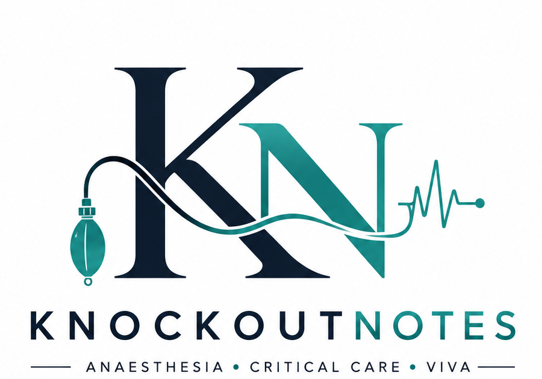

Knockout
Notes.
High-yield medical knowledge, distilled for the moments when you need to remember it — not just read it.

💥 KnockoutNotes Philosophy
Don't memorise everything. Understand what matters, know the exact numbers when they matter, and keep a source attached to every answer.
Today's Knockout
One high-yield concept. One clinically useful takeaway.
Succinylcholine — IV intubating dose
For adult tracheal intubation, a commonly cited IV dose is 1–1.5 mg/kg.
Explore
Built around the way an MD Anaesthesia resident actually studies.
High-yield takeaways
Short concepts with exact values and a reference attached.
Drug cards
Dose, onset, mechanism, indications, contraindications and viva points.
ICU essentials
Ventilation, haemodynamics, shock, sepsis and emergency medicine.
Viva classics
Questions that keep coming back — with concise answers.
Concept notes
Longer explanations when a pearl is not enough.
Reference shelf
Guidelines, textbooks, algorithms and downloadable resources.